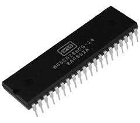

Why the 65C02?¶

65C02 processor from Western Design Center
Choosing the Right CPU¶
At the outset of this project, one of the most critical decisions was selecting a CPU architecture. Several classic 8-bit and 16-bit processors were considered — notably the MOS 6502, Zilog Z80, and Intel 8088/8086.
Each of these CPUs played a foundational role in early personal computing. However, important practical considerations shaped the final choice:
- The 8088/8086, though historically significant, is no longer in production.
- The Z80, another strong contender, also recently ceased production — though both it and the 8086 remain available through surplus and legacy channels.
- The WDC 65C02, a modern CMOS variant of the original 6502, is still in active production. It not only has robust commercial support but also carries the legacy of influential systems like the Apple II, Commodore 64, BBC Micro, and NES.
This combination of availability, legacy, and technical elegance made the 65C02 a natural choice.
Instruction Set Simplicity¶
One of the most compelling arguments in favor of the 6502 — especially for a learning-oriented platform — is its simplicity. Its architecture and instruction set are compact and easy to grasp, making it particularly approachable for those new to assembly language or low-level system design.
Here's a comparative look at instruction set sizes:
| CPU | Approximate Number of Instructions | Notes |
|---|---|---|
| 6502 | ~56 | Small, minimal instruction set; easy to memorize |
| 65C02 | ~70 | Enhanced 6502 with additional instructions and fixed quirks |
| 65C816 | ~92 | 16-bit extension of 65C02; backward-compatible, adds new registers |
| 8080 | ~78 | Slightly more complex, more registers than 6502 |
| Z80 | ~158 | Includes extended opcodes, prefixes, and register pairs |
| 8086/88 | ~133 | 16-bit instructions, multi-byte ops, complex syntax and segments |
Note
Instruction counts are approximate because architectures differ in how they handle prefixes, variants, addressing modes, and unofficial or undocumented opcodes. Extended CPUs (like Z80 or 65C816) often reuse base instructions with added functionality.
While instruction count isn't the sole measure of complexity, it does reflect how minimal and focused the 6502 is. In contrast, the 8080 and Z80 offer richer feature sets that can also present steeper learning curves.
Subjectivity note
The ease of programming in assembly is naturally a matter of opinion. However, there is broad consensus that the 6502 is beginner-friendly, largely due to its straightforward instruction set and predictable behavior.
By building this platform around the 6502, we aim to blend historical relevance with practical accessibility, offering a compelling environment for both exploration and education in low-level computing.